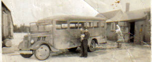
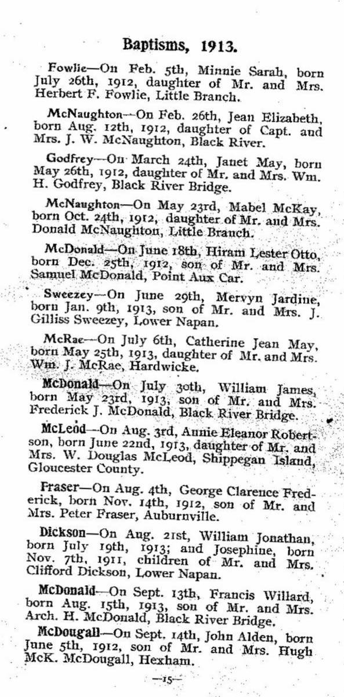
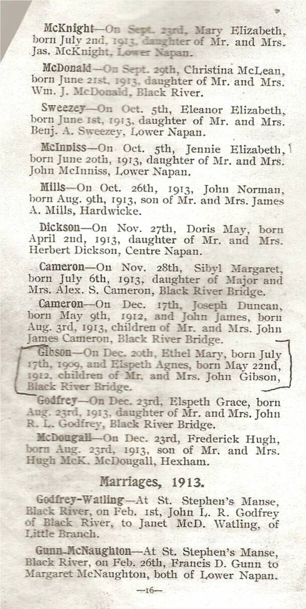

The Family Chronicle
No. 136 March 20, 2006
____________________________________________________________________

Thanks to Della (Adams) O’Neil for the photo of her father, Tom Adams, holding his daughter, Doris.
Adams School bus
Although the photo is undated, we think that it was taken about 1943-44. It is likely a Ford vehicle and Della thinks that her father purchased the chassis and constructed some of the body – likely the interior but mayvbe more.
As I recall, Tom started with one bus, the one shown above, transporting students from Bay du Vin while the Mack and George Godfrey transported students from Black River. Later Tom operated buses from both ends of the district.
Tom was awarded a plaque for 40 years of accident free driving. When I taught at the Miramichi Rural High School, and, before having a car, I traveled from the school back to the Branch by the school bus, on its return trip from the Bay du Vin run.
School Nostalgia
The following notes were triggered by the discovery of some school papers dating back to the nineteen-forties.
Bet you’d have to look quite a while to find an ink blotter in your house. I found a postcard-sized ink blotter recently among some papers from my Teachers’ College days in 1947. It had some ink spots on it but not many. Mine was a promotional piece by the Bank of Montreal.
All quality writing pads, not counting scribblers, had an ink blotter as the first page so that, when finished writing a page, one simply closed the cover, the ink blotter, soaking up any surplus ink.
Among the same papers were some notebooks from Teachers College and high school also written in ink as were test and exam papers.
Writing pens of the day were refillable and one carried a filled pen in one’s shirt pocket. It was not unusual for a leaky pen to to ruin a shirt. Ink, usually black or blue, was purchased in a small bottle.
I used a slate when I started to school but all desks had a small hole in the desk top to hold an ink bottle and of course, in the earliest days, we used a straight pen. One could dip the pen directly into the bottle or use the syringe, which was part of the bottle cap, to take a few drops of ink from the bottle and place it on the pen nib. Pen nibs were of different sizes providing for either fine or broad strokes.
I do not remember when we shifted from slates to paper; we certainly had lead pencils but I cannot remember any rules on using pens versus pencils.
St. Stephen’s Church Record-1913

The Family Chronicle (Copyright) is an occasional newsletter published by Don Glendenning and posted on the family website. It is intended to share information about my family, community and the times in which I grew up. While every effort is made to be accurate, errors are likely to occur. Comments, enquiries and information may be sent to 62 Queen Elizabeth Drive, Charlottetown, PEI, C1A 3A9. Tel: 902 892 5859. Email: don@glendenning.net Web: www.glendenning.net/don

Great Grandmother Glendenning
I found this recently in Daniel F. Johnson’s New Brunswick Newspaper Vital Statistics:
“Clifton (Glou. Co.) October 23 – Mrs. Margaret Glendenning of Canobie departed this life Monday, Oct. 21st, at the age of 92 years. The interment took place Wednesday 23rd in the Presbyterian burying ground, New Bandon. Mr. MacInnis was the officiating clergyman.”